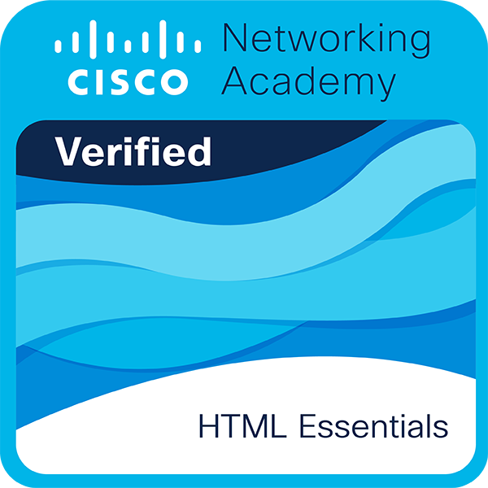
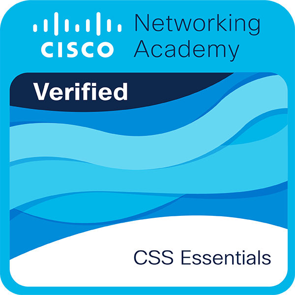
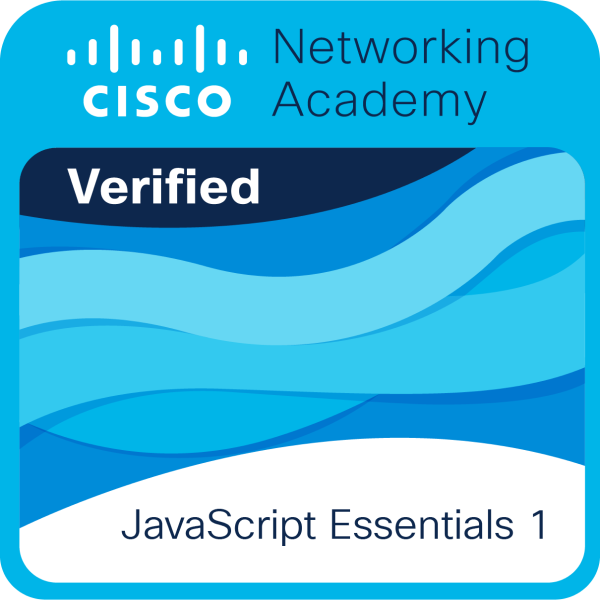

01
HTML
IntermediárioEstrutura e organização do conteúdo de páginas web.
02 · formação e prática
Tecnologia e design são duas partes do que estou aprendendo a construir. Aqui apresento minhas ferramentas e meu momento de aprendizado em cada uma.
Minha formação em construção
Durante minha formação em Desenvolvimento de Sistemas pelo SENAI, aprendi a trabalhar com HTML, CSS, JavaScript, Figma e Canva. Uso o que aprendo em projetos práticos, explorando tanto a programação quanto o planejamento visual. Ainda estou aprimorando meus conhecimentos, por isso prefiro mostrar meu nível atual com transparência.
Minhas ferramentas
Avaliação pessoal · sem porcentagens artificiais
Estrutura e organização do conteúdo de páginas web.
Estilização, layouts responsivos e animações em páginas web.
Estudo de lógica e interatividade para interfaces web.
Exploração de layouts, protótipos e organização visual de interfaces.
Criação de apresentações, composições gráficas e materiais visuais.
Próximos passos
Quero continuar praticando JavaScript e Figma, aprofundar meus conhecimentos em desenvolvimento web e explorar cada vez mais UI/UX Design, animações e experiências visuais. Meu objetivo é evoluir com estudos e projetos reais, um passo de cada vez.
Formação complementar · Cisco Networking Academy
Estas são minhas badges de conclusão dos cursos HTML Essentials, CSS Essentials e JavaScript Essentials 1. Elas representam etapas reais da minha formação e convivem com minha autoavaliação de habilidades, que continuo aprimorando.

Cisco Networking Academy · 2026
Fundamentos da estruturação de páginas web com HTML.
Concluído em 07/05/2026
Ver certificado
Cisco Networking Academy · 2026
Fundamentos da estilização e apresentação visual de páginas com CSS.
Concluído em 22/10/2026
Ver certificado
Cisco Networking Academy · 2026
Fundamentos de programação e conceitos iniciais de JavaScript.
Concluído em 15/09/2026
Ver certificado